Výsledky pre jednotlivých študentov je možné spravovať v záložke s názvom "Výsledky". Najskôr je však nutné si vybrať správny akademický rok, do ktorého harmonogram patrí a následné zvoliť vám pridelený harmonogram (viz. nasledujúci obrázok).
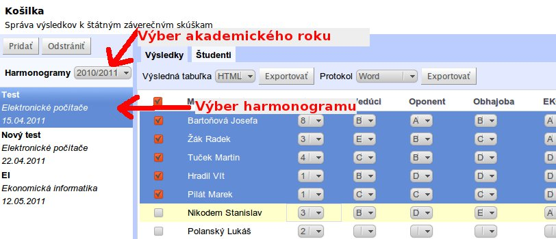V tejto časti je možné pridelovať študentom hodnotenia za všetky predmety z odborného bloku, hodnotenia vedúceho, oponenta a ďalšie. Najskôr je však nutné vložiť číslo otázky, ktorú si študent vybral.
Vložiť číslo otázky je možné v záložke "Výsledky" vo stĺpcí s názvom "Otázka".
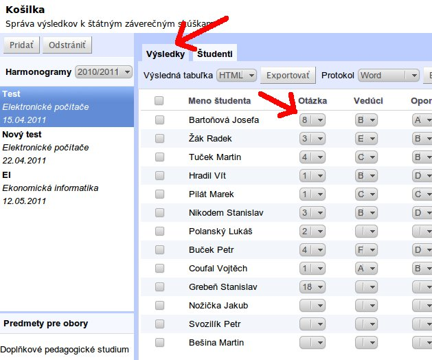V záložke "Výsledky" je taktiež možné vkladať známky za jednotlivé častí SZZ. Polia slúžiace na vkladanie známok sú zobrazené na nadledujúcom obrázku.

Ak máte zapísané známky, tak je možné všetky známky exportovať v podobe súhrnej tabuľky. Pri exporte je ale najskôr nutné vybrať študentov, ktorých výsledky sa budú exportovať. To je možné buď jednotlivo pomocou checkboxov v ľavej časti každého riadku (viz. nadledujúci obrázok).
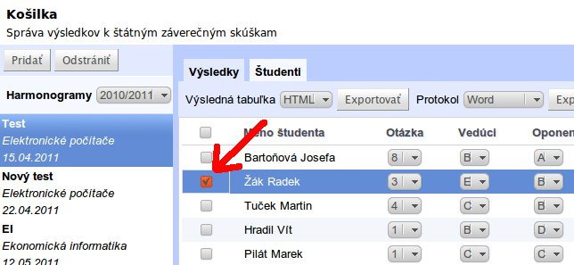Alebo je možné študentov taktiež vybrať hromadne. Hromadný výber je možné vykonať prostredníctvom checkboxu v záhlaví tabuľky.
UPOZORNENIE: Študenta je možné vybrať len v prípade ak má pridelené všetky hodnotenia.
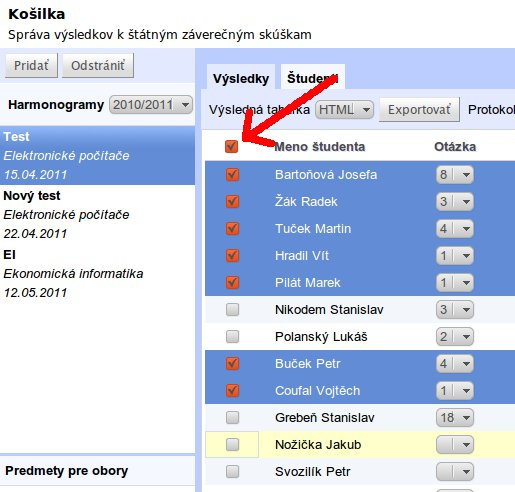Samotný export je potom možné vykonať pomocou tlačidla s názvom "Exportovať" (viz. obrázok), pričom je možné si zvoliť z dvoch formátov, do ktorých sa bude exportovať (PDF a HTML). Kliknutie na tlačidlo "Exportovať" vyvolá dialóg s ponukou uloženie súboru na lokálny počítať v prípade formátu PDF a v prípade exportu do formátu HTML dôjde v prehliadači k vyvolaniu vyskakovacieho okna.
UPOZORNENIE: Pre export do formátu HTML je nutné mať vo webovom prehliadači povolené vyskakovacie okná.
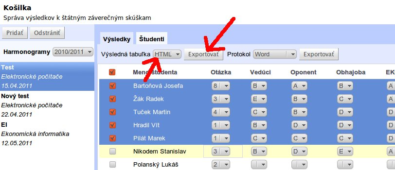Pred samotným exportom protokolu je možné sa pozrieť na náhľad protokolu vo formáte HTML. Náhľad je možné vyvolať kliknutím na meno študenta, pre ktorého chcete náhľad vidieť.
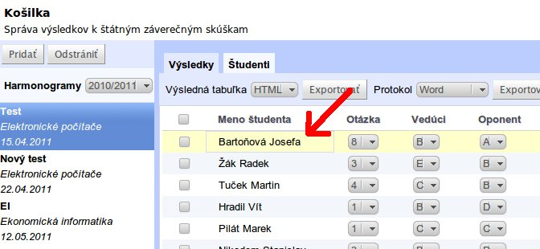UPOZORNENIE: Po kliknutí na meno študenta dôjde k vyvolaniu vyskakovacieho okna. Preto je nutné mať v prehliadači povolené vyskakovacie okná.
Druhým druhom exportu výsledkov je export v podobe protokolu. Podobne ako v prípade exportu súhrnej tabuľky, je nutné najskôr vybrať študentov, ktorí sa budú exportovať. Exportovať študentov je potom možné prostredníctvom tlačidla "Exportovať" do dvoch formátov a to: Microsoft Word alebo Open Office.
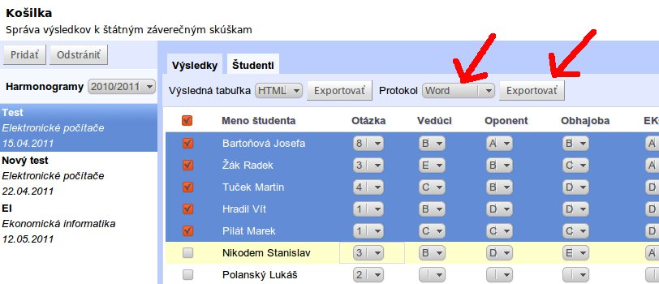Správa harmonogramov prebieha v záložke s názvom "Študenti". V tejto časti je možné po vytvorení harmonogramu pridávať/odstraňovať študentov do/z harmonogramu, meniť poradie študentov, zadávať tému bakalárskej práce a ďalšie.
Avšak najskôr je nutné v ľavom menu vybrať akademický rok a následne harmonogram, ktorý chcete upravovať.
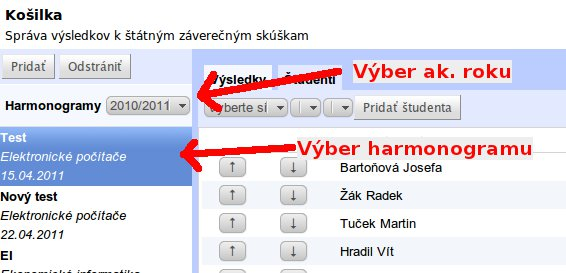Nový harmonogram je možné pridať po kliknutí na tlačidlo "Pridať".
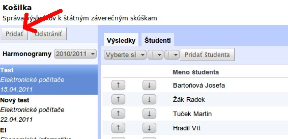Po kliknutí dôjde k zobrazenia okna, v ktorom je možné zvloliť parametre daného harmonogramu:
Upraviť jednotlivé parametre je možné po kliknutí na tlačidlo "+" nachádzajúce sa v pravej časti aplikácie. Po Kliknutí na toto tlačidlo dôjde k zobrazeniu panelu, pomocou ktorého je možné upraviť už vytvorený harmonogram.
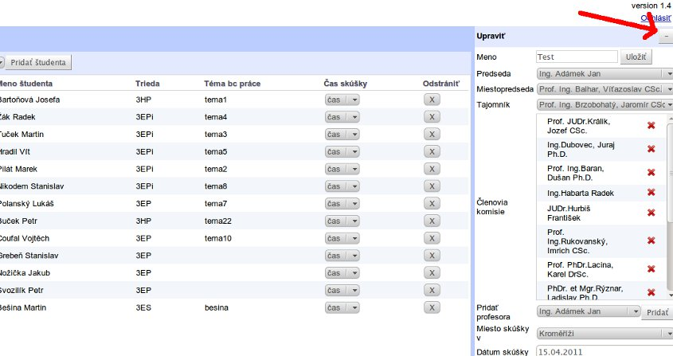Harmonogram je možné odstrániť kliknutím na tlačidlo "Odstrániť" v ľave časti aplikácie.
UPOZORNENIE: Pri odstránení harmonogramu dôjde aj ku kompletnému odstráneniu všetkých pridelených známok.
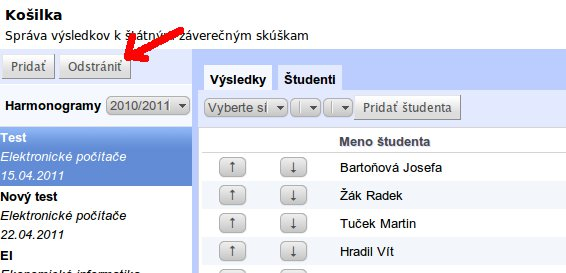Do harmonogramu je študenta možné pridať prostredníctvom lisboxov zobrazených na naslesledujúcom obrázku. V prvom listboxe je treba si vybrat akademické rok, v druhom triedu, do ktorej študent patrí a nakoniec je výber samotného študenta. Študenta je potom možné jenoducho pridať pomocou tlačidla "Pridať študenta".
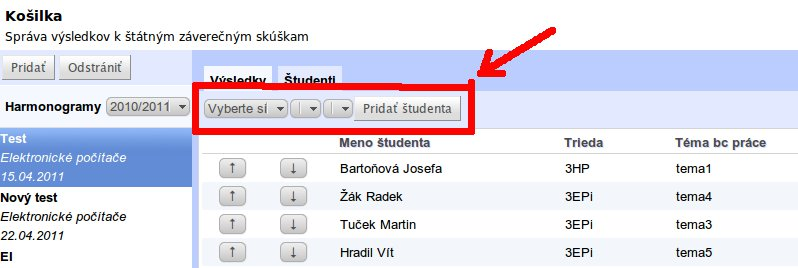Študenta je možné jenoducho odstrániť po klniknutí na tlačidlo so symbolom "X" nachádzajúceho sa v tabulke v stĺpci odstrániť. Po takomto odstránení dôjde aj ku kompletnému odstránení všetkých zadaných hodnotení.
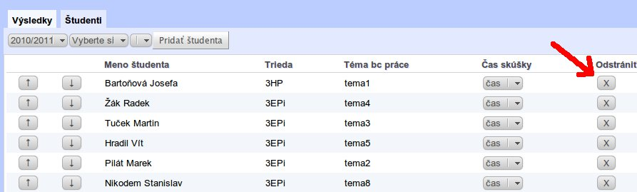Na to aby mohol byť vyexportovaný protokol, je najskôr nutné vložiť tému bakalárskej práce. To je možné po klknutí na riadok v tabuľke vo stĺpci s názvom "Téma bc práce". Po klknutí dôjde k zobrazeniu textového poľa, do ktorého je možné vpísať názov práce (viz. obrázok).
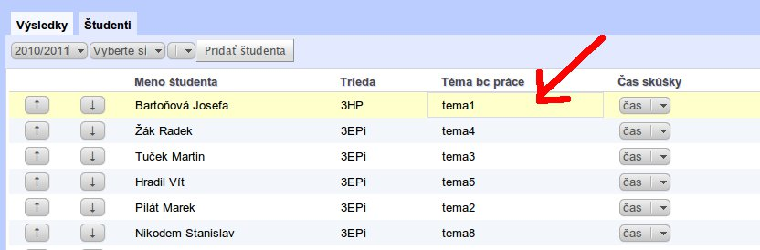V tejto časti prebieha správa odborných blokov a predmotov do nich patriacich. V ľavej spodnej časti menu s názvom "Predmety pre obory" sa nachádzajú jednotlivé obory. Po kliknutí na niektorý z týchto oborov dôjde k zobrazeniu tabuľky v ktorej je možné do daného oboru predmety vkladať, odstraňovať a upravovať otázky pre jednotlivé predmety.
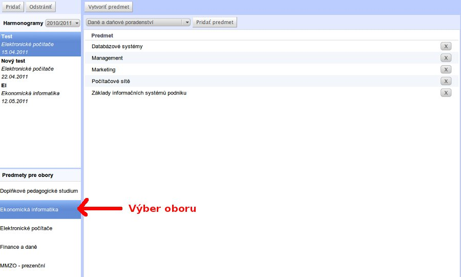Nový predmet je možné vytvoriť kliknutím na tlačidlo "Vytvoriť predmet".
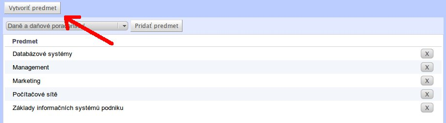Po kliknutí dôjde k zobrazeniu dialogu, v ktorom je možné zadať meno predmetu, skratku predmetu a jednotlivé otázky, ktoré predmet obsahuje.
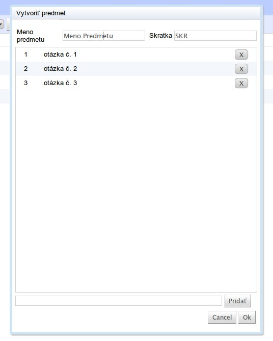Už vytvorený predmet je možné upraviť po kliknutí na meno predmetu v tabuľke, kedy dôjde k zobrazeniu dialogu, v ktorom je možné upraviť vlastnosti daného predmetu.
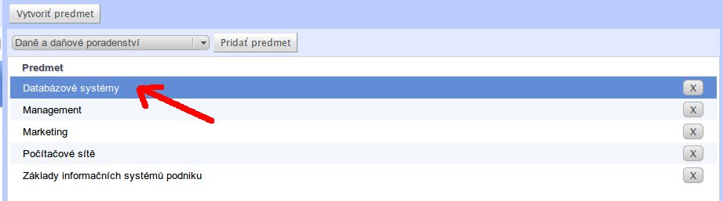Kliknutím na na text znenia otázky v tomto dialogu dôjde k zobrazeniu vstupného poľa, do ktorého je možné vpísať zmenený text otázky. Podobne je možné zmeniť aj číslo otázky
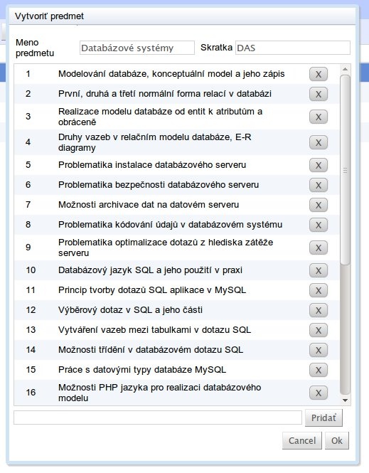Pridanie predmetu do odobrného bloku je možné prostredníctvom tlačidla "Pridať predmet".
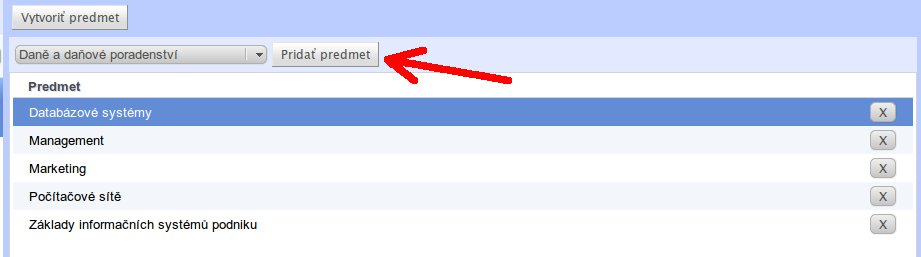Predmet je možné z odborného bloku odstrániť jednoducho kliknutí na symbol "X" nachádzajúceho sa v riadku odstraňoveného predmetu.
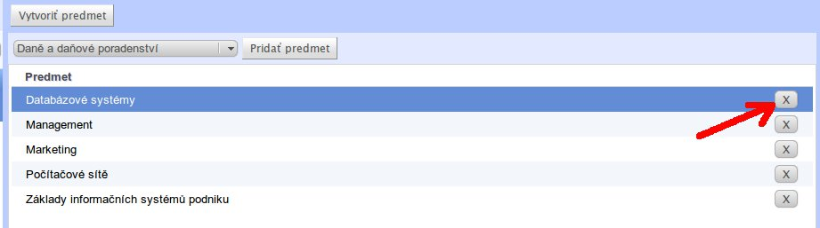